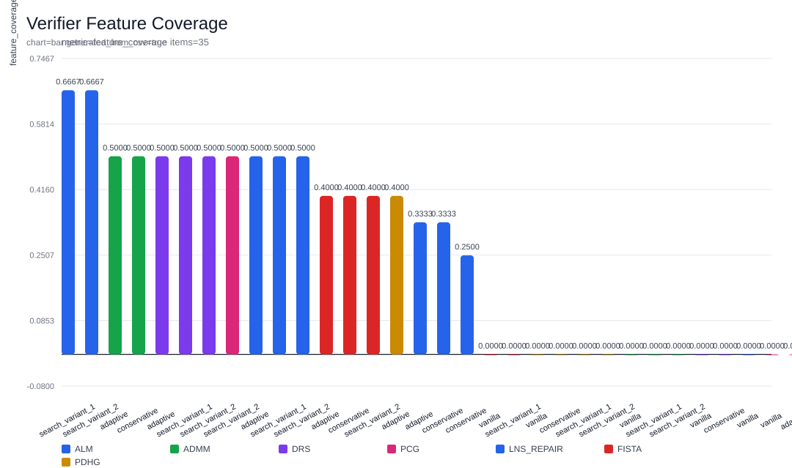
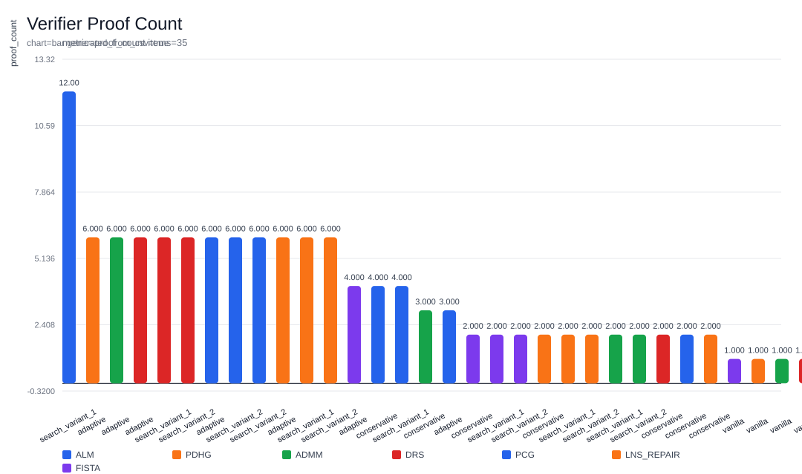
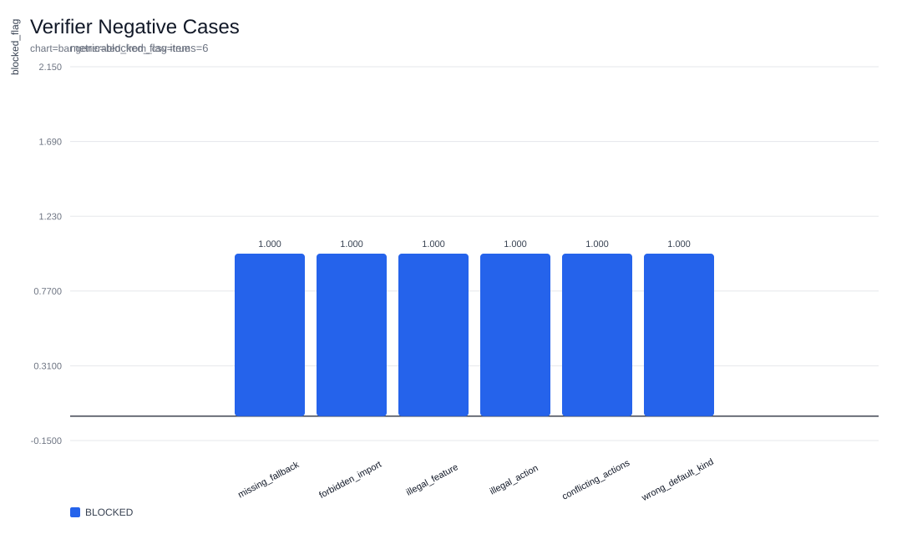

Static semantic validation summary for the typed policy DSL, including feature coverage, proof-carrying diagnostics, and blocked negative-case checks.



| Algorithm | Policy | Coverage | Proofs | Primary Proof |
|---|---|---|---|---|
| ALM | search_variant_1 | 0.6667 | 12 | path[1]: fallback satisfied under if violation > 0.08 and gap > 0.04, if state.get('stagnation_count', 0) >= 3 and violation > 0.015, if violation > 0.03 |
| ALM | search_variant_2 | 0.6667 | 6 | path[1]: fallback satisfied under if violation > 0.12, if state.get('stagnation_count', 0) > 4 and gap > 0.02 |
| ADMM | adaptive | 0.5000 | 6 | path[1]: fallback satisfied under if ratio > 1.3, if state.get('stagnation_count', 0) >= 5 |
| DRS | adaptive | 0.5000 | 6 | path[1]: fallback satisfied under if state.get('residual_norm', 0.0) > 0.02, if state.get('stagnation_count', 0) >= 5 |
| DRS | search_variant_1 | 0.5000 | 6 | path[1]: fallback satisfied under if residual > 0.01 and gap > 0.5, if state.get('stagnation_count', 0) >= 3 and residual > 0.004 |
| DRS | search_variant_2 | 0.5000 | 6 | path[1]: fallback satisfied under if residual > 0.02, if state.get('obj', 0.0) > state.get('obj_prev', 0.0) or (state.get('stagnation_count', 0) > 4 and residual > 0.003) |
| LNS_REPAIR | adaptive | 0.5000 | 6 | path[1]: fallback satisfied under if state.get('violation', 0.0) > 0.0, if state.get('stagnation_count', 0) >= 4 and state.get('mip_gap', 0.0) > 0.05 |
| LNS_REPAIR | search_variant_1 | 0.5000 | 6 | path[1]: fallback satisfied under if mip_gap > 0.18 and fractionality > 0.18, if state.get('stagnation_count', 0) >= 3 and mip_gap > 0.1 |
| Case | Status | Error Count | Primary Error |
|---|---|---|---|
| missing_fallback | BLOCKED | 2 | Every return path must include a fallback action before returning. |
| forbidden_import | BLOCKED | 1 | Imports are not allowed in policy DSL. |
| illegal_feature | BLOCKED | 1 | State feature sigma is not allowed for PCG. |
| illegal_action | BLOCKED | 1 | Action set_tau is not allowed for LNS_REPAIR. |
| conflicting_actions | BLOCKED | 1 | Conflicting actions emitted on one path: set_tau and scale_tau. |
| wrong_default_kind | BLOCKED | 1 | Default for state feature instance_features must be dict. |
Generated from results/tables/verifier_positive.csv and results/tables/verifier_negative.csv.